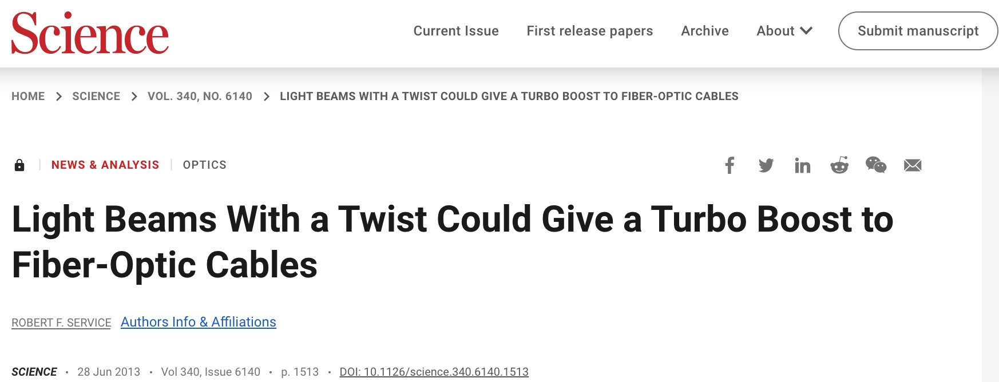
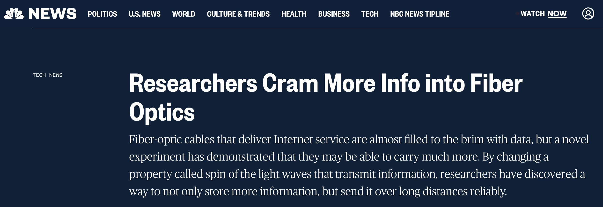
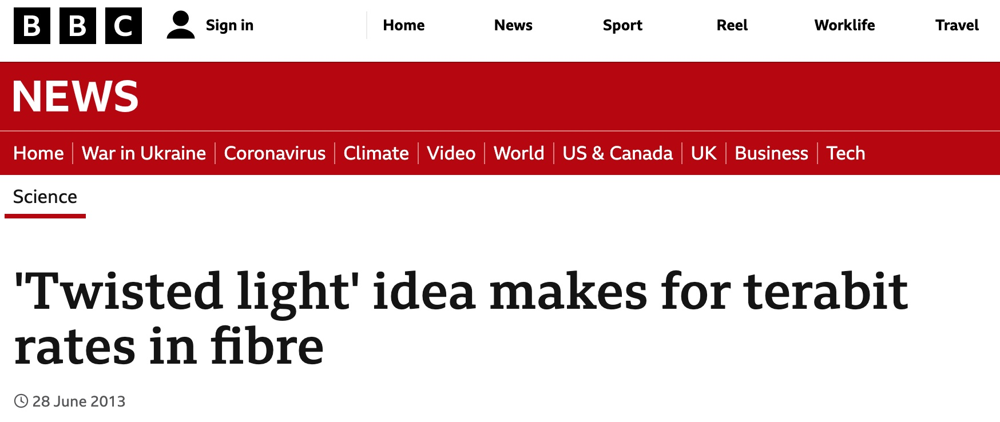
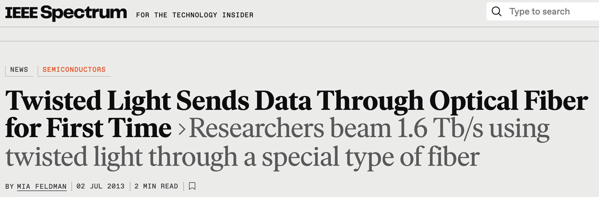
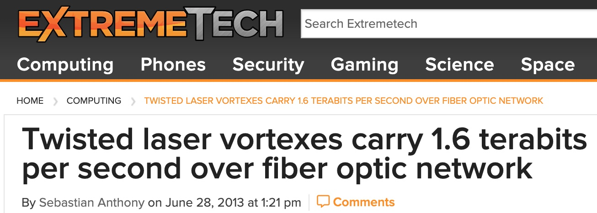

Media
Patents
Implemented in all BLI instruments the following patent enabled COVID-19 antibody discovery:
- D. Thaker, M. Fowler, S. Nedungadi, D. V. Banda, B. Bruhn, N. Bozinovic, K. Mobilia, “Systems and methods for optimizing an instrument system workflow”, Patent, No. WO-2020243015A1 (2019) (link/download).
Press
Together with Prof. Ramachandran at Boston University I invented fiber-optic system based on orbital-angular-momentum multiplexing, following are few of the media releases:
|  |  |
|  |  |
 |
 |
|  |  |
Publications
My publications span work from bio-microscopy to fiber-optics and optical networking. I designed complex prototypes as well as built robust systems that went to the bottom of the ocean.
For citations see here.
N. Bozinovic, Y. Yue, Y. Ren, M. Tur, P. Kristensen, H. Huang, A. E. Willner, S. Ramachandran, “Terabit-Scale Orbital Angular Momentum Mode Division Multiplexing in Fibers”, Science, 28 June 2013: 340 (6140), 1545-1548. (link / download)
N. Bozinovic, “Orbital Angular Momentum in Fibers”, PhD thesis, 2013. (download)
J. Wang, M.J. Padgett, S. Ramachandran, N. Bozinovic, S. Golowich, M.P.J. Lavery, H. Huang, Y. Yue, A.E. Willner “Multimode communications using OAM,” in Optical Fiber Telecommunications VI-B, I. Kaminow, T. Li, A.E. Willner, Ed., Academic Press, 2013. (link)
Y. Yue, N. Bozinovic, Y. Ren, H. Huang, M. Tur, P. Kristensen, S. Ramachandran, and A. E. Willner, “1.6-Tbit/s Muxing, Transmission and Demuxing through 1.1-km of Vortex Fiber Carrying 2 OAM Beams Each with 10 Wavelength Channels,” in Optical Fiber Communication Conference/National Fiber Optic Engineers Conference 2013, OSA Technical Digest, paper OTh4G.2. (link)
N. Bozinovic, Y. Yue, Y. Ren, M. Tur, P. Kristensen, A. Willner, and S. Ramachandran, “Orbital Angular Momentum (OAM) Based Mode Division Multiplexing (MDM) over a Km-length Fiber,” in European Conference on Optical Communication, OSA Technical Digest, 2012, post-deadline paper Th.3.C.6. (link / download)
N. Bozinovic, S. Golowich, P. Kristensen, and S. Ramachandran, “Control of orbital angular momentum of light with optical fibers,” Optics Letters 37, 2451-2453 (2012). (link / download)
S. Ramachandran, N. Bozinovic, P. Gregg, S. Golowich, and P. Kristensen, “Optical vortices in fibres: A new degree of freedom for mode multiplexing,” in European Conference on Optical Communication, OSA Technical Digest, 2012, invited paper Tu.3.F.3. (link)
S. Golowich, P. Kristensen, N. Bozinovic, P. Gregg, and S. Ramachandran, “Fibers Supporting Orbital Angular Momentum States for Information Capacity Scaling,” in Frontiers in Optics Conference, OSA Technical Digest, 2012, invited paper FW2D.2. (link)
S. Golowich, N. Bozinovic, P. Kristensen, and S. Ramachandran, “Vortex Fiber Mode Amplitude Estimation,” in CLEO: Applications and Technology, OSA Technical Digest, 2012, paper JTu2K.2. (link)
N. Bozinovic, S. Ramachandran, M. Brodsky, and P. Kristensen, “Record-length transmission of entangled photons with orbital angular momentum (vortices),” in Frontiers in Optics, OSA Technical Digest, 2011, post-deadline paper PDPB1. (link) (download)
N. Bozinovic, P. Kristensen, and S. Ramachandran, “Long-range fiber-transmission of photons with orbital angular momentum,” in CLEO:2011 - Laser Applications to Photonic Applications, OSA Technical Digest , 2011, paper CTuB1. (link / download)
N. Bozinovic, P. Kristensen, and S. Ramachandran, “Are Orbital Angular Momentum (OAM/Vortex) States of Light Long-Lived in Fibers?,” in Frontiers in Optics/Laser Science, OSA Technical Digest, 2011, paper LWL3. (link)
S. Santos, K. Chu, D. Lim, N. Bozinovic, T. Ford, C. Hourtoule, A. C. Bartoo, S. K. Singh, J. Mertz, Optically sectioned fluorescence endomicroscopy with hybrid-illumination imaging through a flexible fiber bundle”, J. Biomed. Opt. 14, 030502, (2009) (link)
S. Santos, K. Chu, D. Lim, N. Bozinovic, T. Ford, C. Hourtoule, A. Bartoo, S. Singh, and J. Mertz, “Optically Sectioned Fluorescence Endomicroscopy with Hybrid-Illumination Imaging through a Flexible Fiber Bundle,” in Novel Techniques in Microscopy, OSA Technical Digest, 2009, paper NWC3. (link)
N. Bozinovic, C. Ventalon, T. Ford, and J. Mertz, “Fluorescence endomicroscopy with structured illumination,” Opt. Express 16, 8016-8025 (2008). (link)
N. Bozinovic, C. Ventalon, T. Ford, and J. Mertz, “Fluorescence Endomicroscopy with Out-of-Focus Background Rejection,” in Biomedical Optics, OSA Technical Digest, 2008, paper BTuF57. (link / download)